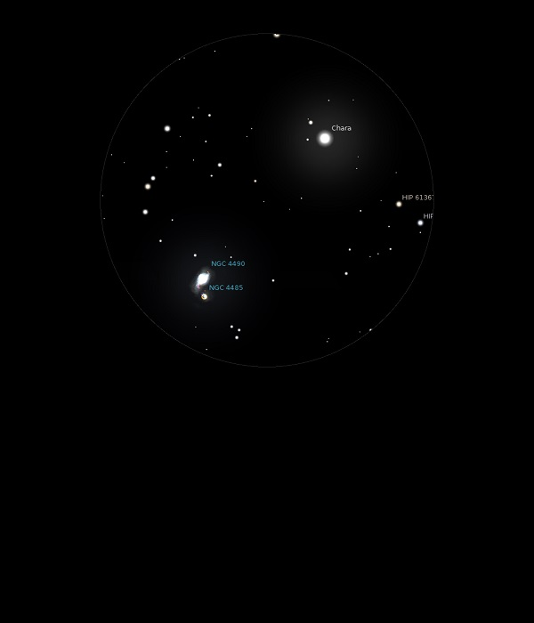

NGC 4490
Galaxy in Canes Venatici
NGC 4490
Mag 9.8
The Cocoon Galaxy
03/07/14
A distinctly misshaped blob with no central brightness but
rather bright patches although still only a haze in 12mm
There is just a hint of NGC 4485, the Mag 12.0 Galaxy which
NGC 4490 appears to be interacting with
Both are in the same 25mm FOV as
B CVn, or 8 CVn, HIP 61317, the Mag 4.20 star known as Chara
Chara appears so bright in the FOV as to be dazzling1
25/03/17
The Cocoon Galaxy
Very easy to locate this pair (with NGC 4485) of interacting
Galaxies since they sit in the same 24mm FOV as Chara, B C Vn,
8 C Vn, HIP 61317 which at Mag 4.20 is the second brightest
star in Canes Venatici and indeed there only seem to be two to
the naked eye!
NGC 4490 appears to have an irregular shape, quite faint but
with a slightly brighter line at its core
The much fainter NGC 4485 at Mag 12.0 is only just hinted at
at one end